This paper explores self-supervised learning of amodal 3D feature representations from RGB and RGB-D posed images and videos, agnostic to object and scene semantic content, and evaluates the resulting scene representations in the downstream tasks of visual correspondence, object tracking, and object detection.
The model infers a latent 3D representation of the scene in the form of 3D feature points, where each continuous world 3D point is mapped to its corresponding feature vector. The model is trained for contrastive view prediction by rendering 3D feature clouds in queried viewpoints and matching against the 3D feature point cloud predicted from the query view. Notably, the representation can be queried for any 3D location, even if it is not visible from the input view. Our model brings together three powerful ideas of recent exciting research work: 3D feature grids as a neural bottleneck for view prediction, implicit functions for handling resolution limitations of 3D grids, and contrastive learning for unsupervised training of feature representations. We show the resulting 3D visual feature representations effectively scale across objects and scenes, imagine information occluded or missing from the input viewpoints, track objects over time, align semantically related objects in 3D, and improve 3D object detection.
We outperform many existing state-of-the-art methods for 3D feature learning and view prediction, which are either limited by 3D grid spatial resolution, do not attempt to build amodal 3D representations, or do not handle combinatorial scene variability due to their non-convolutional bottlenecks.
Continuous Convolutional Contrastive 3D Networks (CoCoNets) are trained to lift 2.5D images to 3D feature function grids of the scene by optimizing for view-contrastive prediction. (a) In the top-down path, the model encodes RGB-D images into a 3D feature map M ∈ R w×h×d×c , and uses explicit 3D feature transformations (translation and 3D rotation) to account for changes of viewpoint between the input and target views. (b) In the bottom-up path, we encode the RGB-D of the target viewpoint into a 3D feature cloud. (c) Given continuous 3D world coordinates (X, Y, Z) and its embedded code v(X,Y,Z) inferred via trilinear interpolation, a fully connected network maps the coordinates and the embedded code, to the feature vector of the 3D point at location (X, Y, Z). (d) Metric learning losses in 3D tie the two point cloud representations together.
| 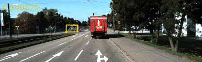 | 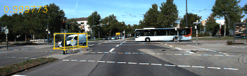 | |
| 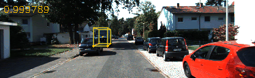 | 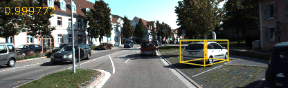 | |
| 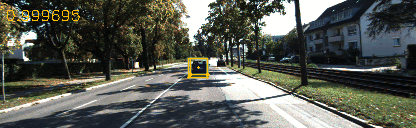 | 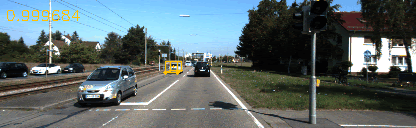 | |
| 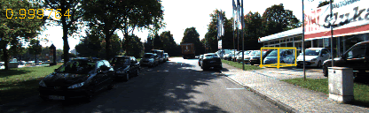 | 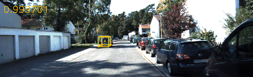 | |
|
|
|
|
| 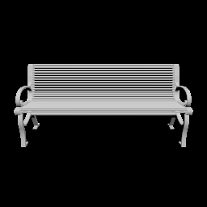 | 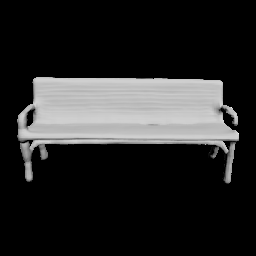 | ||
| 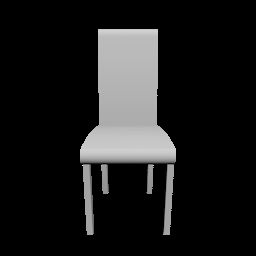 | 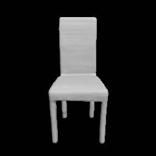 | 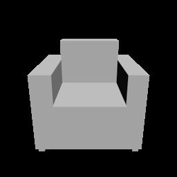 | 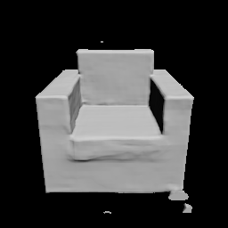 |
| 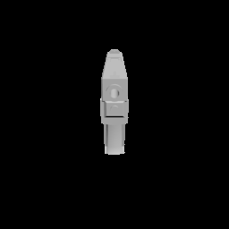 | 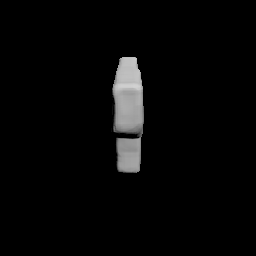 | ||
@inproceedings{lal2021coconets,
title={CoCoNets: Continuous contrastive 3D scene representations},
author={Lal, Shamit and Prabhudesai, Mihir and Mediratta, Ishita and Harley, Adam W and Fragkiadaki, Katerina},
booktitle={Proceedings of the IEEE/CVF Conference on Computer Vision and Pattern Recognition},
pages={12487--12496},
year={2021}
}